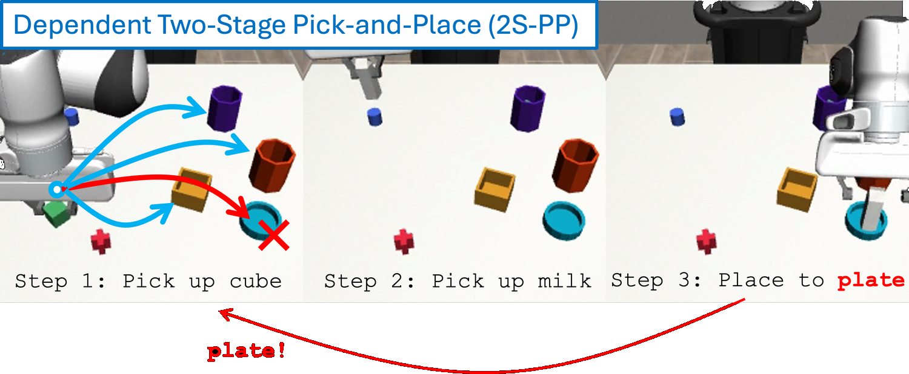
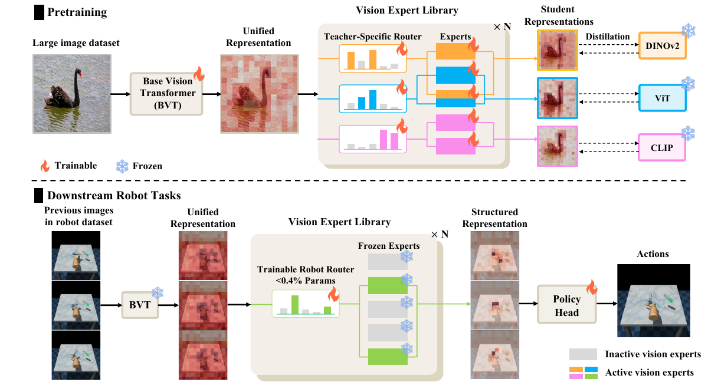
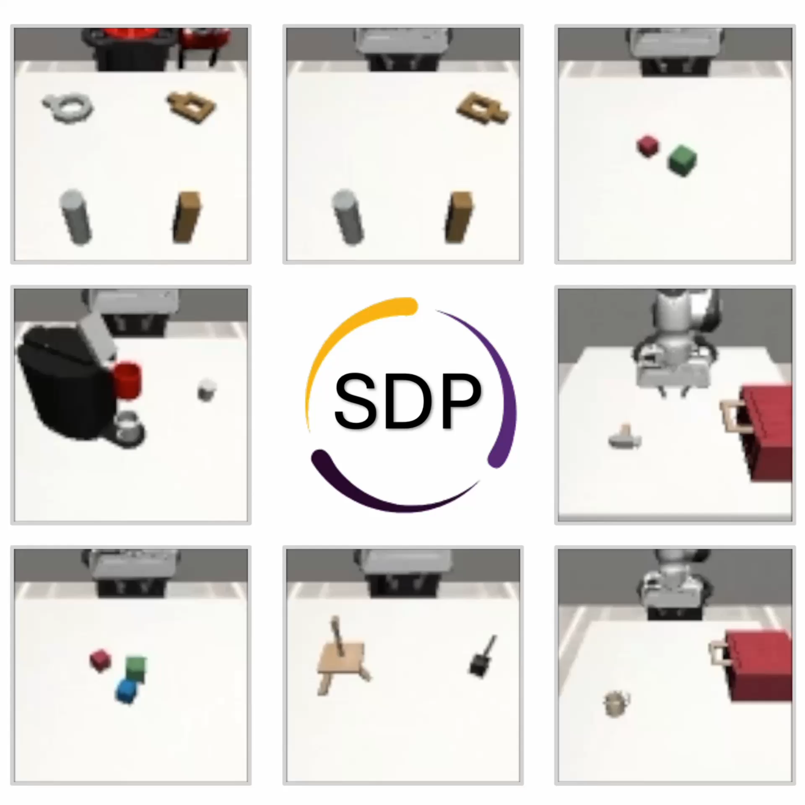

What makes learning generalize?
Understanding how the information in demonstrations and learned representations affects behavior beyond the training distribution.
Generalization & learningRobot learning & machine learning
How do robots learn
to generalize?
I'm a PhD candidate in Mechanical Engineering at UC Berkeley, advised by Professor Masayoshi Tomizuka and affiliated with Berkeley Artificial Intelligence Research (BAIR). I expect to graduate in May 2027.
Our work on compositional generalization in sequential robot tasks is a CoRL 2026 Spotlight.
DADP is accepted at ICML 2026. I also received the ICML Gold Reviewer recognition.
Three papers at ICLR 2026: VER, Interleave-VLA, and Mean Flow Policy (Oral).
I joined Amazon as an Applied Scientist Intern, studying reusable action priors for data-efficient vision-language-action models.
Our robotic palletization paper received the Best Paper Award in Automation at ICRA 2025. Congratulations to Tianqi!
I joined NVIDIA as an Isaac Loco-Manipulation Intern.
Two papers got accepted by CVPR 2025!
One paper got accepted by CoRL 2024!
One paper got accepted by ECCV 2024!
One paper got accepted by IROS 2024!
01 Research perspective
I study the foundations of efficient and generalizable robot learning: how data composition, learned representations, and model architectures shape what a policy can learn and transfer. My work spans compositional generalization, data-centric policy learning, and the theory and acceleration of generative models.
Understanding how the information in demonstrations and learned representations affects behavior beyond the training distribution.
Generalization & learningLearning representations that retain useful structure, transfer across tasks, and connect perception to action.
Representation & transferExploring how modularity and generative models let policies reuse knowledge, adapt, and learn new skills.
Policy structure & adaptation02 Publications
Three threads connecting fundamental questions to learning in the physical world.



* Equal contribution. † Corresponding author.
2026ICML
2026ICLR
2026ICLR
2025CVPR
2025CVPR
2025ICRA
Best Paper Award in Automation
2025ICRA
2024ECCV
2024IROS
2026IEEE/ASME T-MechEarly access
2026ICRA Space Robotics Workshop
2026Preprint
2026Preprint
2026Preprint
2025Preprint
2024Preprint
2024Preprint
03 Beyond the papers
Pretrained reusable action priors through large-scale reinforcement learning for data-efficient vision-language-action models in dexterous manipulation.
Studied how data composition, scaling, training dynamics, and contrastive learning shape representations for transfer across human and robot embodiments.
PhD in Mechanical Engineering
MS in Mechanical Engineering
BS, 2018; MS, 2021 · Mechanical Engineering
I review for ICML, ICLR, ICRA, and IROS, and for IEEE Transactions on Robotics (T-RO), IEEE Robotics and Automation Letters (RA-L), and Transactions on Machine Learning Research (TMLR).
ICML Gold Reviewer · 2026
Let’s exchange ideas
I am always open to collaboration and discussions on exciting research projects. Please feel free to reach out!